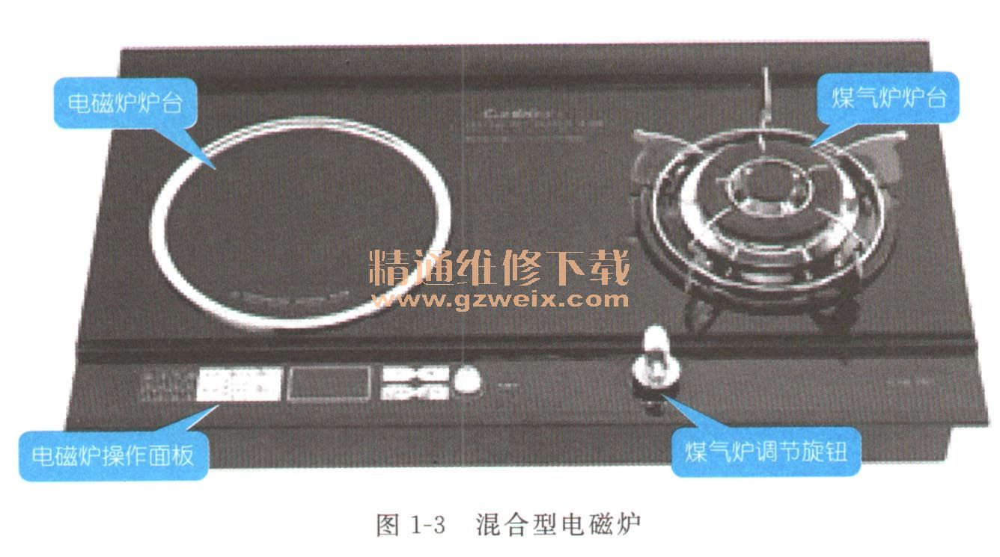
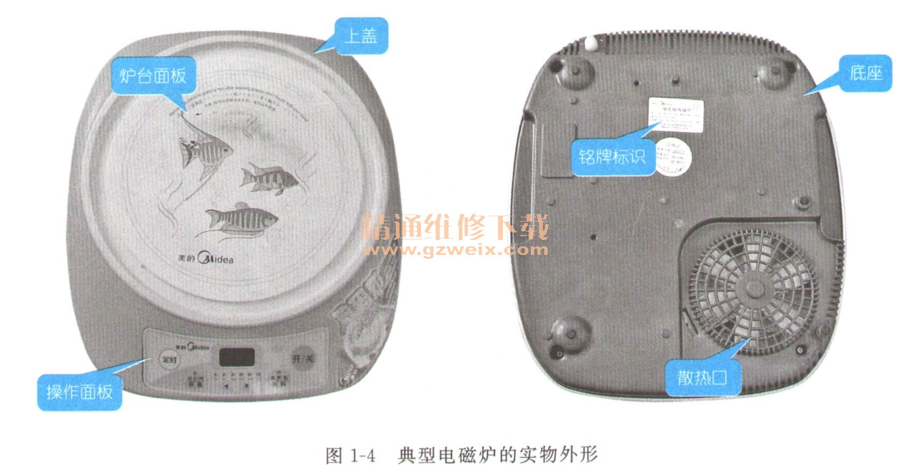
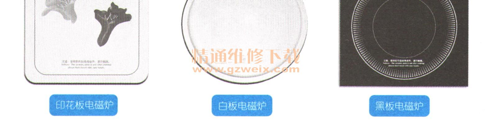
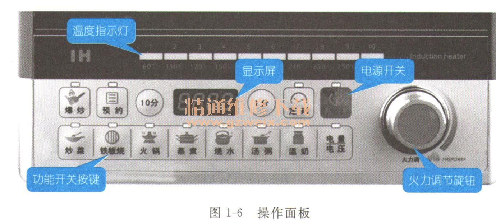
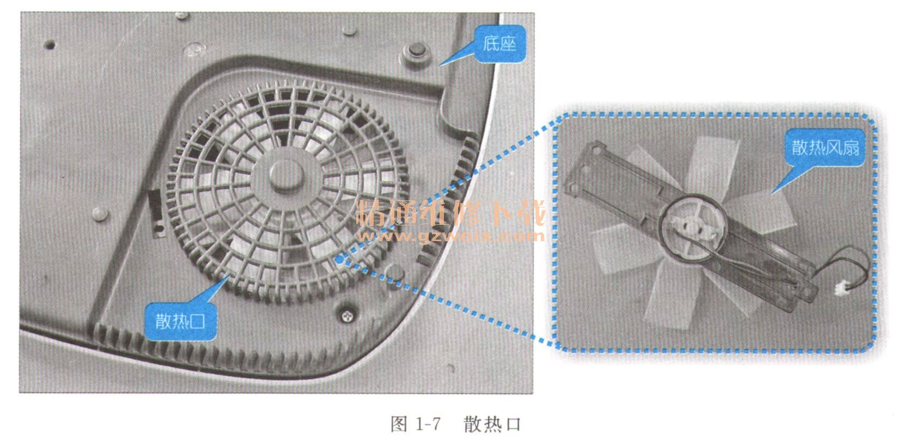
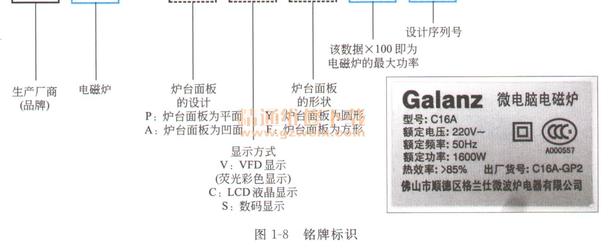
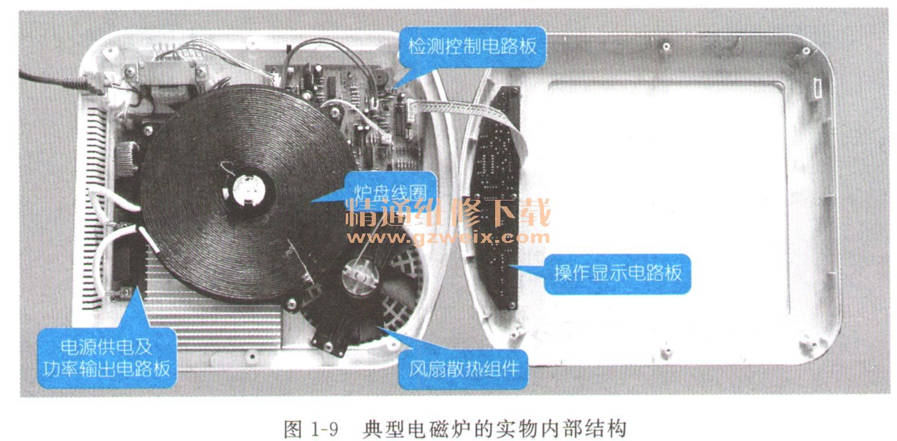
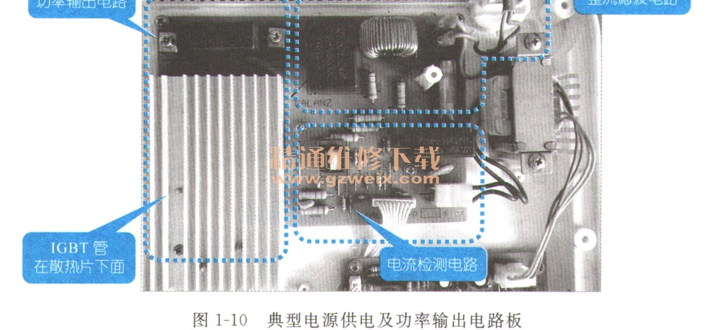
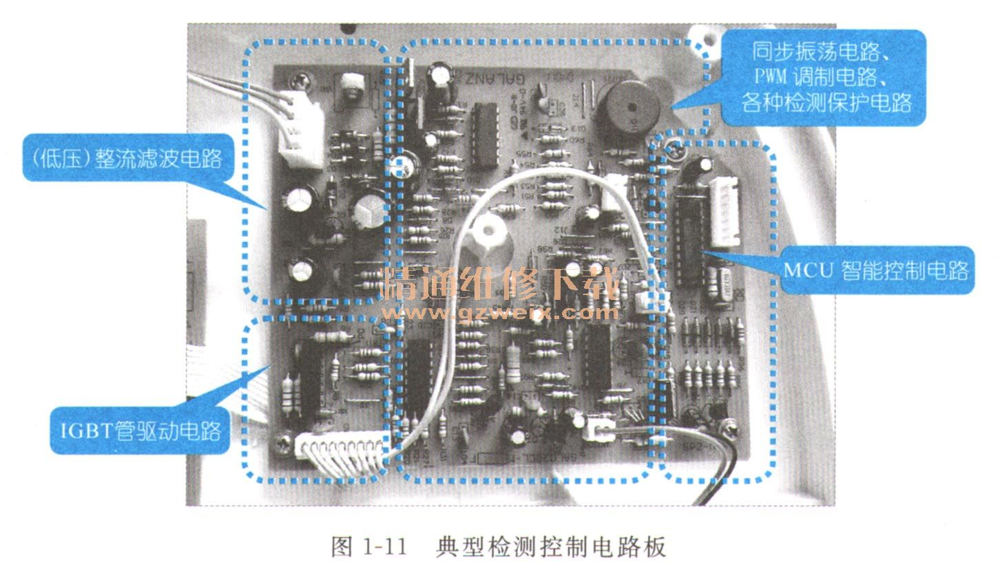
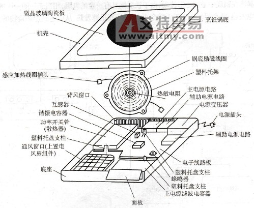

1.1了解电磁炉的整机结构
电磁炉是一种利用电磁感应原理进行加热的电热炊具，可以进行煎、炒、蒸、煮等各种烹饪，使用非常方便。
1.1.1电磁炉的种类特点
随着生活水平的提高和技术的不断发展，电磁炉受到了越来越多家庭的青睐，电磁炉的样式和功能也逐渐趋向于多样化。
如图1-1所示为台式电磁炉的实物外形，它具有无火、无烟和安全、方便等特点。随着电磁炉使用率的提高，除单炉台式电磁炉外，双炉台和多炉台式电磁炉也逐渐增多，如图1-2所示为双炉台和多炉台式电磁炉的实物外形。
为了适应家庭厨房多样性的需求，许多电磁炉生产厂商还推出了电磁炉与煤气灶合二为一的混合型电磁炉，即将电磁炉与煤气灶制成一体，一边是电磁炉炉台，一边是煤气炉炉台，如图1-3所示。

1. 1. 2电磁炉的外形结构
从外观上来看，电磁炉主要是由上盖、炉台面板、操作面板、底座、散热口、铭牌标识等部分构成的，如图1-4所示为典型电磁炉的实物外形。

（1）电磁炉的炉台面板与电磁炉其他外壳部分结构不同，采用高强度、耐冲击、耐高温的陶瓷或适应微晶材料制成，在加热状态下热膨胀系数小，可径向传播热量。电磁炉的炉台面多为圆形和方形两种，并且其面板的花色也有所不同主要有印花板、白板和黑板，如图1-5所示。

（2）电磁炉的操作面板上一般都设有电源开关、功能开关按键、火力调节旋钮、温度指示灯、显示屏等，如图1-6所示，用户可以通过操作面板的按键实现对电磁炉的工作控制，电磁炉再通过指示灯或显示屏显示出电磁炉的工作状态。

（3）电磁炉的散热口位于底部，如图1-7所示。电磁炉内部产生的热量可以通过散热风扇的作用，由散热口及时排出，降低炉内的温度，利于电磁炉的正常工作。

（4）电磁炉的品牌、型号、功率、产地等，都通过其铭牌标识进行表示，如图1-8所示，为电磁炉的铭牌标识。通过铭牌标识主要是了解其供电电压和最大输入功率，以便了解家庭中的电源能否提供其消耗功率。

1. 1. 3电磁炉的内部结构
从内部来看，电磁炉主要是由电源供电及功率输出电路板、检测控制电路板、操作显示电路板以及炉盘线圈（又称线圈盘）、风扇散热组件等几部分构成的，如图1-9所示为典型电磁炉的实物内部。

（1）电源供电及功率输出电路板主要包括：市电输入和整流滤波电路、电流检测电路、功率输出电路等，如图1-10所示为典型电源供电及功率输出电路板。其 主要功能是将AC 220V市电提供的电能直接经高压整流滤波电路（如：桥式整流电路、滤波电容等）生成DC 300V电压送入功率输出电路，由IGBT管（门控管）、炉盘线圈、谐振电容形成高频高压的脉冲电流，与铁质炊具进行热能转换。由于该电路板工作的功率较 大，因此设有电流检测、电压检测等监控电路，以确保电磁炉中的重要元器件不被损坏。

（2）检测控制电路板主要包括：MCU智能控制电路（微处理器控制电路）、锅质检测电路、IGBT过压保护电路、浪涌保护电路、同步振荡电路、PWM调制 电路、IGBT驱动电路、温度检测电路、风扇驱动电路、报警驱动电路等，如图1-11所示为典型检测控制电路板。其功能主要是由MCU智能控制电路对同步 振荡电路、PWM调制电路、IGBT驱动电路进行控制，使其能够驱动功率输出电路中的IGBT管（门控管）。在该电路板上还设有各种保护电路，如浪涌保护 电路、IGBT过压保护电路等，对电磁炉各个工作点进行监控，从而确保使用安全。

（3）操作显示电路板是由操作按键（或开关）、键控指令形成电路、指示灯、显示屏等构成的，如图1-12所示为典型操作显示电路板。其功能主要是用于接收 人工操作指令并送给MCU智能控制电路，由MCU智能控制电路进行处理，再输出控制指令，如开／关机、火力设置、定时操作等，并通过指示灯、显示屏将电磁 炉工作状态显示出来。
高频电磁炉也是电磁炉的一种。主要由锅底励磁线圈组件、炉台面板、基本电路、安全保护电路等部分及烹饪锅组成其具体部件如图2-5所示。所不同的是高频电磁炉是利用高频感应加热的，电路相对复杂，热效率更高，振动较少，噪声也较低，自动化控制功能更全面。

图2-5 高频电磁炉的结构示意图
电磁炉的基本工作原理是怎样的？
电磁炉是应用电磁感 应产生涡流的原理来加热的。简言之，其工作过程就是一个电动生磁、磁变生电，最后电流生热的过程。图2-4所示为电磁炉工作原理示意图，当交流电源经 UR1桥堆整流、L1和C1滤波后，形成+310V左右的直流电压，经锅底加热线圈L2加到IGBT的漏极上，当开关脉冲高电平到达IGBT的栅极 时，IGBT导通，内阻很小，电流
电磁炉是应用电磁感应产生涡流的原理来加热的。简言之，其工作过程就是一个“电动生磁”、“磁变生电”，最后“电流生热”的过程。图2-4所示为电磁炉工作原理示意图，当交流电源经UR1桥堆整流、L1和C1滤波后，形成+310V左右的直流电压，经锅底加热线圈L2加到IGBT的漏极上，当开关脉冲高电平到达IGBT的栅极时，IGBT导通，内阻很小，电流由UR1的“+”极- L1- L2-IGBT漏极一源极一地-UR1的“-”极，把电能转化为磁能储存在锅底励磁线圈中。当开关脉冲低电平到达IGBT的栅极时，IGBT截止，由于L2线圈中的电流不能突变，只能通过C2放电，即给C2充电，把磁场能转化成电场能，随后电容C2又向L2放电，如此周而复始，形成谐振，直到下一个开关脉冲高电平到达IGBT的栅极时，又重复上述过程。于是在锅底L2线圈上便产生了高频磁场（电动生磁），该高频磁场产生的磁力线通过铁质锅底时便产生了强大的涡流（磁变生电），涡流在锅底中呈同心形流动，由于铁质锅具有一定的电阻，相当于一圈一圈的电阻丝通电发热，整个锅底相当于无数个小电炉，锅底迅速发热，从而达到加热食物的目的。

图2-4 电磁炉的工作原理示意图
简单地说，电磁炉就是利用磁化的电流通过线圈产生变化的磁场，当磁场内的磁力线通过金属器皿的底部时即会产生无数小涡流，涡流使锅具铁分子高速无规则运动，分子互相碰撞、摩擦而产生热能，使器具本身自行高速发热，用来加热和烹饪食物，从而达到煮食的目的。
图中，系统检测是电磁炉用来检测锅底温度和元器件温度的，当温度达到设定值或极限值时，系统将作出相应的反应。功率控制是用来控制电磁炉IGBT功率管的栅极脉冲的幅度和宽度，以此来控制，IGBT是导通还是截止，及导通和截止时间的长短，以达到控制电磁炉功率大小的目的。低压电源是通过整流后的脉动直流电转化而来的，一般为+5V、+12V或+24V，供电磁炉各功能模块使用。显示电路是用来显示电磁炉的各项技术指标的，以方便消费者操作。控制电路是消费者操作面板及其相应功能电路的对外单元，是人机对话的窗口。